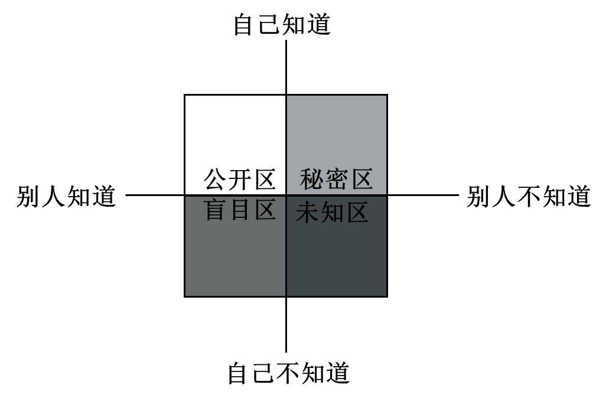
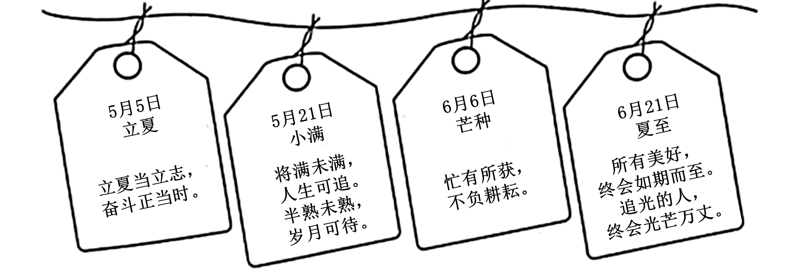
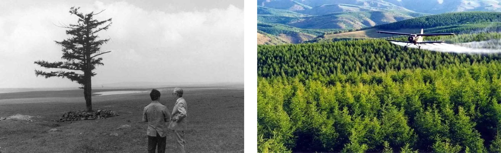
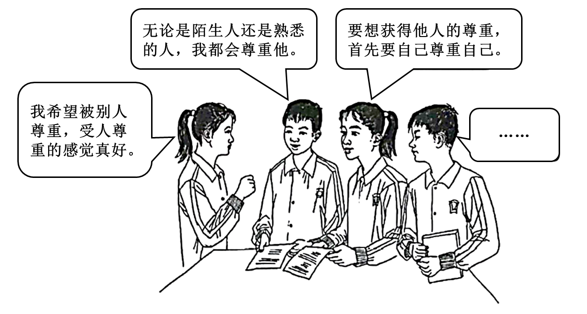

2022年北京市中考政治真题 原卷解析
2022年北京市初中学业水平考试
道德与法治试卷
姓名____________ 准考证号___________ 考场号_____________ 座位号____________
考生须知 | 1．本试卷共8页，共两部分，共20题，满分70分。考试时间70分钟。 2．在试卷和草稿纸上准确填写姓名、准考证号、考场号和座位号。 3．试题答案一律填涂或书写在答题卡上，在试卷上作答无效。 4．在答题卡上，选择题用2B铅笔作答，其他试题用黑色字迹签字笔作答。 5．考试结束，将本试卷、答题卡和草稿纸一并交回。 |
第一部分
本部分共15题，每题2分，共30分。在每题列出的四个选项中，选出最符合题目要求的一项。
1. 历经7年艰辛努力，北京冬奥会、冬残奥会胜利举办，举国关注，举世瞩目。北京冬奥会、冬残奥会广大参与者珍惜伟大时代赋予的机遇，在冬奥申办、筹办、举办的过程中，共同创造了北京冬奥精神。这一精神就是（ ）
A. 追逐梦想、勇于探索、协同攻坚、合作共赢
B. 胸怀大局、自信开放、迎难而上、追求卓越、共创未来
C. 生命至上、举国同心、舍生忘死、尊重科学、命运与共
D. 上下同心、尽锐出战、精准务实、开拓创新、攻坚克难、不负人民
【答案】B
【解析】
【详解】本题是时政题，解析略。
2. 我们守护生命，既要爱护身体，又要养护精神。下列选项体现充盈精神世界的是（ ）
①居家学习期间注意规律作息，适当锻炼 ②在学校的组织下一起收看“天宫课堂”
③参加应急逃生演练，掌握自护自救技能 ④参加“书香中国·北京阅读季”主题活动
A. ①②B. ①③C. ②④D. ③④
【答案】C
【解析】
【详解】本题考查守护生命的相关知识。
②④：分析选项，在学校的组织下一起收看“天宫课堂”，提高我们的创新意识。参加“书香中国·北京阅读季”主题活动，提高我们的阅读能力，丰富精神世界。符合充盈精神世界的要求，故②④正确；
①③：选项属于爱护身体的相关知识，不符合题意，故排除①③；
故本题选C。
3. 认识自己很重要。下图启示我们（ ）

①他人评价是认识自己的一面镜子 ②公开自己的秘密才能被别人接纳
③我们需要不断地探索和发现自己 ④扩大盲目区有利于全面认识自己
A. ①③B. ①④C. ②③D. ②④
【答案】A
【解析】
【详解】本题考查正确认识自己。
①③：正确认识自己可以促进自我发展，可以促进与他人的交往。分析图中，他人评价是认识自己的一面镜子，我们需要不断地探索和发现自己，故①③正确；
②：认识自己不需要公开自己的秘密，故排除②；
④：扩大盲目区不利于全面认识自己，故排除④；
故本题选A。
4. “非淡泊无以明志，非宁静无以致远。”“非学无以广才，非志无以成学。”诸葛亮在《诫子书》中对儿子的这些教诲告诉我们（ ）
①宽以待人，设身处地为他人着想 ②修身养性，明确自己的人生志向
③转听教海，做到唯父母之命是从 ④发奋学习，提升个人能力和智慧
A. ①③B. ①④C. ②③D. ②④
【答案】D
【解析】
【详解】本题主要考查学习的相关知识。
②：“非淡泊无以明志，非宁静无以致远”的意思是不看清世俗的名利就不能明确自己的志向，身心不宁静就无法实现远大的理想，启示我们修身养性，明确自己的人生志向，故②选项说法正确；
④：“非学无以广才，非志无以成学”的意思是不学习就无法增长才干，没有志向就无法使学习有所成就，启示我们要明确人生志向，发奋学习，提升个人能力和智慧，故④选项说法正确；
①：材料不能体现宽以待人，设身处地为他人着想，故①选项不合题意；
③：我们不能唯父母之命是从，我们应该听取父母的建议，也要有自己的主见，故③选项说法错误；
故本题选D。
5. 一位老师每逢节气都会给学生写寄语，下面是其中的一部分。

此举体现了（ ）
①循循善诱，诲人不倦 ②因循守旧，固守传统
③以文化人，润心启智 ④尊师重教，教学相长
A. ①③B. ①④C. ②③D. ②④
【答案】A
【解析】
【详解】本题考查教师的相关知识。
①③：教师是人类文明的主要传承者之一，承担着教书育人的使命。题干中教师用二十四节气给学生写寄语体现了循循善诱，诲人不倦；以文化人，润心启智，故①③正确；
②：材料未涉及因循守旧，固守传统，故排除②；
④：材料未涉及尊师重教，教学相长，故排除④；
故本题选A。
6. 神舟十四号乘组的一位航天员说，作为战友，我们朝夕相处、并肩作战，共同经历了12年的学习和训练。我们是使命共同体、责任共同体、荣誉共同体。感谢教育培养我的广大科技人员，感谢航天员大队的全体战友。对这段话理解正确的是（ ）
①在集体中应尊重和保护个人利益 ②勇于担当，维护集体荣誉和利益
③共同愿景引领集体成员团结进取 ④美好集体应善于合作，敢于竞争
A. ①③B. ①④C. ②③D. ②④
【答案】C
【解析】
【详解】本题考查美好集体的相关知识。
②③：我们要建设美好集体。题干中，我们是使命共同体、责任共同体、荣誉共同体。这说明勇于担当，维护集体荣誉和利益；共同愿景引领集体成员团结进取，故②③正确；
①④：选项说法正确，但是不符合题意，故排除①④；
故本题选C。
7. “先看病，先拿药，后支付。”北京某区推出信用医疗服务，市民可以凭借自己的“信用”在一定额度内，免除挂号、检查、检验、取药等多环节的排队缴费流程，实现医疗付费“零排队”。市民在医疗场景下的守信、失信记录会上传至全市公共信用信息服务平台。信用医疗服务的实施（ ）
①方便市民就医，增进社会互信 ②说明企业诚信经营才能够赢得客户
③引导市民珍惜个人的信用记录 ④表明格守诚信与保护隐私是对立的
A. ①②B. ①③C. ②④D. ③④
【答案】B
【解析】
【详解】本题考查诚信的相关知识。
①③：诚信是中华民族的传统美德，是一个人安身立命之本。题干中，信用医疗服务的实施方便市民就医，增进社会互信，引导市民珍惜个人的信用记录 ，故①③正确；
②：材料未涉及企业诚信经营才能够赢得客户，故排除②；
④：恪守诚信与保护隐私不是对立的，故排除④；
故本题选B。
8. “国家通过各种途径，创造劳动就业条件，加强劳动保护，改善劳动条件，并在发展生产的基础上，提高劳动报酬和福利待遇。”“劳动是一切有劳动能力的公民的光荣职责。”我国宪法的这些规定说明（ ）
A. 应先行使权利后履行义务B. 放弃权利就可以不履行义务
C. 权利和义务是完全对等的D. 有的权利同时也是义务
【答案】D
【解析】
【详解】本题考查权利义务的关系。
D：题干中“国家通过各种途径，创造劳动就业条件，加强劳动保护，改善劳动条件，并在发展生产的基础上，提高劳动报酬和福利待遇。”这说明劳动是公民的基本权利。“劳动是一切有劳动能力的公民的光荣职责。”这说明劳动是公民的基本义务。这些规定说明公民有的权利同时也是义务，故D正确。
A：权利和义务没有先后之分。故排除A；
B：义务必须履行，故排除B；
C：权利和义务不是完全对等的，故排除C；
故本题选D。
9. 某派出所民警是全国公安系统英模代表，她负责的辖区内居民老龄化程度较高，80岁以上的老人占17%。为了保护老人的生命财产安全，她带领同事们推行邻里守望结对子等工作机制，通过一键式呼救等方式为老人提供生活便利和安全保障。材料体现了（ ）
①公安机关用忠诚担当守护百姓安宁幸福 ②协助和配合公安机关工作是公民的权利
③公安机关创新工作方式，提高服务水平 ④公安机关自觉接受监督，防止权力滥用
A. ①③B. ①④C. ②③D. ②④
【答案】A
【解析】
【详解】本题主要考查行政机关的相关知识。
①③：题干信息中派出所民警通过创新方式，提高为人民服务的水平，为老人提供生活便利和安全保障，体现了公安机关用忠诚担当守护百姓安宁幸福，故①③选项说法正确；
②：协助和配合公安机关工作是公民应尽 责任，故②选项排除；
责任，故②选项排除；
④：题干信息主要体现了公安机关全心全意为人民服务，与公安机关自觉接受监督，防止权力滥用无关。故④选项排除；
故本题选A。
10. 公民权利受到损害，要依照法定程序维护权利。诉讼是处理纠纷和应对侵害最正规，最权威的手段，是维护合法权益的最后屏障。下列属于诉讼的是（ ）
A. 张某向消费者协会投诉某商场产品存在质量问题
B. 市民王某向环保部门反映某企业的违法排污行为
C. 某企业因拖欠员工工资被劳动保障行政部门调查
D. 人民法院就郑某某侵害他人名誉权一案进行审理
【答案】D
【解析】
【详解】本题主要考查依法行使权利的相关知识。
D：人民法院就郑某某侵害他人名誉权一案进行审理体现了人民法院通过诉讼形式解决纠纷，故D选项说法正确；
A：张某向消费者协会投诉某商场产品存在质量问题属于通过非诉讼手段进行维权，与诉讼无关，故A选项不合题意；
B：市民王某向环保部门反映某企业的违法排污行为属于依法行使监督权的表现，与诉讼无关，故B选项不合题意；
C：某企业因拖欠员工工资被劳动保障行政部门调查，体现了我国保障公民劳动权，与诉讼无关，故C选项不合题意；
故本题选D。
11.
法治社会建设实施纲要 （2020-2025年） | 法治中国建设规划 （2020-2025年） | 法治政府建设实施纲要 （2021-2025年） |
2020年12月 | 2021年1月 | 2021年8月 |
上图中的“一规划两纲要”，共同构建起新时代中国特色社会主义法治建设的顶层设计，描绘了一幅更加恢宏的法治画卷。在实现中华民族伟大复兴的进程中，坚定不移地走法治道路，要求（ ）
①公民自觉守法、严格执法，维护社会公平正义 ②坚持法治国家、法治政府和法治社会一体建设
③实行良法善治，因为有了法律制度就有了法治 ④行政机关的各项权力都应该在法治轨道上运行
A. ①②B. ①③C. ②④D. ③④
【答案】C
【解析】
【详解】本题考查建设法治中国。
②④：我国坚持依法治国的基本方略。题干中的“一规划两纲要”，说明坚持法治国家、法治政府和法治社会一体建设，行政机关的各项权力都应该在法治轨道上运行，故②④正确；
①：公民不能严格执法，故排除①；
③：有了法律制度不到一定就有法治，故排除③；
故本题选C。
12. “仓宝”是2022年联合国中文日暨中央广播电视总台第二届海外影像节的数字虚拟形象。“仓宝”的名字来源于传说中的中华文字始祖仓颉的“仓”字。它身背甲骨文小书包，头戴中国传统斗笠，携带一支“神笔”，记录美好。“仓宝”这一形象（ ）
①意在学习和借鉴优秀外来文化 ②体现了中华文化源远流长
③有助于让世界更好地了解中华文化 ④表明传统文化和数字技术相结合才能得到传承
A. ①②B. ①④C. ②③D. ③④
【答案】C
【解析】
【详解】本题考查中华文化的相关知识。
②③：国家高度重视中华文化的发展。“仓宝”的名字来源于传说中的中华文字始祖仓颉的“仓”字。这体现了中华文化源远流长，有助于让世界更好地了解中华文化 ，故②③正确；
①：材料未涉及学习和借鉴优秀外来文化，故排除①；
④：传统文化并不是要和数字技术相结合才能得到传承，故排除④；
故本题选C。
13. 2021年10月，中央人大工作会议在北京召开。这是在党的历史上、人民代表大会制度历史上第一次以“中央人大工作会议”为名召开的会议。这次会议为加强和改进新时代人大工作指明了方向。加强和改进新时代人大工作（ ）
①要加强中国共产党对人大工作全面领导
②要充分发挥人大代表作用，密切与人民群众的联系
③要求人民代表大会履行政治协商、民主监督和参政议政的职能
④要求人民代表大会作为最高国家权力机关，统一行使国家权力
A. ①②B. ①③C. ②④D. ③④
【答案】A
【解析】
【详解】本题主要考查人民代表大会的相关知识。
①②：根据教材知识和题干信息可知，加强和改进新时代人大工作应该加强中国共产党对人大工作的全面领导，充分发挥人大代表作用，密切与人民群众的联系，故①②选项说法正确；
③：中国人民政治协商会议履行政治协商、民主监督和参政议政的职能，故③选项说法错误；
④：我国全国人民代表大会是最高国家权力机关，故④选项说法错误；
故本题选A。
14.

上图中的两张照片间隔60年，拍摄的是塞罕坝林场的同一地点。经过三代林场人的艰苦奋斗，塞罕坝已成为中国生态文明建设范例，林场建设者被联合国环境规划署授予“地球卫士奖”。塞罕坝从“一棵树”到一片林海的巨变（ ）
①为世界可持续发展提供了可借鉴的宝贵经验 ②说明人类应该避免对自然进行开发和利用
③体现了我国自然资源丰富，总量大，种类多 ④说明我国坚持绿色发展，追求人与自然和谐共生
A. ①②B. ①④C. ②③D. ③④
【答案】B
【解析】
【详解】本题主要考查建设美丽中国的相关知识。
①④：我国塞罕坝的治理过程为世界可持续发展提供了可借鉴的宝贵经验，体现了我国坚持绿色发展，追求人与自然和谐共生，故①④选项说法正确；
②：人类应该坚持人与自然和谐共生，尊重自然、保护自然、顺应自然，但不是避免对自然进行开发和利用，故②选项说法错误；
③：题干信息主要体现了我国坚持绿色发展，追求人与自然和谐共生，与我国资源现状无关，故③选项不合题意；
故本题选B。
15.
▷90后的她赴老挝对当地学员进行货运培训，与海关、客户对接货运工作，为中老铁路客货两旺、惠及民生作出了贡献。 ▷他作为青年技术专家，前往中非共和国推广菌草技术，带动当地农户了解和种植菌草。当地人也把菌草称作减贫致富的“幸福草”。 ▷80后的他在阿拉伯半岛参加中沙联合考古队，双方队员交流技术、学习彼此的语言和文化。他们的考古发现为海上丝绸之路学术研究提供了珍贵的实物资料。 |
如果给上述这组新闻起一个标题，最恰当是（ ）
A. 当今世界，面临着各种风险与挑战的考验B. 合作共赢，中国为世界提供更广阔的市场
C. 青年以更加开放的态度参与全球规则制定D. 为推动构建人类命运共同体贡献青春力量
【答案】D
【解析】
【详解】本题考查构建人类命运共同体。
D：当今世界是紧密相连的。题干中，90后为中老铁路客货两旺、惠及民生作出了贡献；青年技术专家，前往中非共和国推广菌草技术；80后的他在阿拉伯半岛参加中沙联合考古队，这体现了为推动构建人类命运共同体贡献青春力量，故D正确；
AB：选项说法正确，但是不符合题意，故排除AB；
C：青年不能参与全球规则制定，故排除C；
故本题选D。
第二部分
本部分共5题，共40分。
16. 让公益走进生活。
某校公益服务社团开展了丰富多彩的活动。课余时间，在图书馆整理图书。周末，在公园宣讲节能环保知识。节假日，去敬老院陪老人聊天。寒暑假，在小区垃圾桶前值守，引导居民对垃圾科学分类；到博物馆做志愿者……
“虽然会花费一些时间和精力，有时也有点累，但让我懂得了做一件事需要坚持！”
“在帮助别人的同时，我学到了很多，也感到很快乐。”“得到别人表扬，我感到很自豪。”回顾参加过的公益活动，同学们感到有付出更有收获。
运用所学，说明参加公益活动有什么收获。
【答案】①有助于树立责任意识，增强社会责任感、服务社会，回报社会。②有利于增长社会知识，最炼实践能力，培养优秀品质、培养亲社会行为。③有利于提升自身价值，创造一个互帮互助、相互关爱的和谐社会。
【解析】
【详解】本题考查服务社会的意义，可结合教材知识作答。
17. 生活中，人们对尊重的认识和感受是多样的。

运用所学，谈谈你对尊重的理解。
【答案】尊重他人是一个人内在修养的外在表现；每个人都是有尊严的个体，都希望得到他人和社会的尊重；尊重是相互的；尊重是维系良好人际关系的前提，是文明社会的重要特征；尊重能够减少摩擦，消除隔阂，增进信任，形成互敬互爱的融洽关系，从而促进社会进步，提高社会文明程度等。
【解析】
【分析】考点考查：尊重他人
能力考查：调动和运用知识，描述和阐述事物
核心素养：道德修养、健全人格
【详解】第一步：审设问，明确主体、作答范围及作答角度。
本题的设问主体为学生， 需要运用XXX的有关知识，从说明类习题的角度进行作答。
第二步：审材料，提取关键词，链接教材知识。
关键词①：希望被别人尊重，受人尊重的感觉真好→可以结合教材知识中尊重的重要性的相关内容作答。
关键词②：无论是陌生人还是熟悉的人，我都会尊重他→可以结合教材知识中尊重的重要性的相关内容作答。
关键词③：首先要学会尊重自己→可以结合教材知识中尊重是相互的相关内容作答。
第三步：整合信息，组织答案。
18. 某校组织“学宪法讲宪法”系列活动，请你参与其中。
活动一 知识竞赛中，有这样一道竞答题。
竞答题 宪法的生命在于实施，宪法的权威也在于实施。保障宪法实施就要坚持依宪治国，加强宪法监督。加强宪法监督，既需要完备的制度措施，更需要人们增强宪法意识。 请列举我国增强宪法意识的一项重要举措。 |
（1）根据题目要求作答。
活动二 演讲比赛前，一位同学撰写演讲稿。
尊敬的各位评委、老师，亲爱的同学们： 大家好！今天我演讲的主题是“人民宪法为人民” 1954年9月20日，第一届全国人民代表大会第一次会议通过了《中华人民共和国宪法》，这是中华人民共和国成立后制定的第一部宪法。 1982年12月4日，是我国现行宪法诞生的日子。那一天，第五届全国人大五次会议以无记名投票表决的方式高票通过了宪法修改草案。表决结果宣布时，人民大会堂内掌声经久不息。这是新中国第四部宪法，是符合国情、符合实际、符合时代发展要求的好宪法，是保证人民创造幸福生活的好宪法。 在这部宪法诞生过程中，宪法修改委员会多次广泛征询意见，发动和组织广大群众进行全民讨论。全国80%左右的成年公民参加了讨论，台湾同胞、港澳同胞、海外侨胞也参加了讨论。人民群众参与的热情万分高涨，热议浪潮持续了整整四个月。 你问我宪法的根基是什么，我会说宪法的根基在于人民发自内心的拥护。你问我宪法的伟力是什么，我会说宪法的伟力在于人民出自真诚的信仰。凸显人民的尊严和价值，表现着宪法颁行的意义。尊重人民、关怀人民、爱护人民，是宪法不懈的追求。 如果让我对上面的内容进行总结，我会用这样几句话，那就是…… |
（2）对上述演讲稿内容进行续写。要求：围绕演讲主题，运用所学，简明扼要。
【答案】（1）设立国家宪法日、宪法宣誓制度等。
（2）宪法是我国的根本大法。我国宪法是党和人民意志的集中体现，是国家的根本法；宪法具有至高无上的权威。坚持依法治国首先要坚持依宪治国，坚持依法执政首先要坚持依宪执政；任何公民、社会组织和国家机关都必须以宪法法律为行为准则。宪法具有最高的法律地位、法律权威和法律效力宪法所规定的内容是国家生活中带有全局性、根本性的问题。宪法是其他法律的立法基础和立法依据， 宪法的制定和修改程序比其他法律更加严格。
【解析】
【分析】考点考查：宪法的相关知识
能力考查：调动和运用知识、描述和阐述事物
核心素养：法治观念
【小问1详解】
本题考查我国增强宪法意识的措施，结合实际作答。
【小问2详解】
第一步：审设问，明确主体、作答范围及作答角度。本题的设问主体为国家， 需要运用宪法的有关知识，从措施类习题的角度进行作答。
第二步：审材料，提取关键词，链接教材知识。
关键词①：宪法修改委员会多次广泛征询意见，发动和组织广大群众进行全民讨论→宪法的制定和修改程序比其他法律更加严格。
关键词②：宪法的根基在于人民发自内心的拥护→我国宪法是党和人民意志的集中体现。
第三步：整合信息，组织答案。
19. 继“西电东送”“西气东输”工程后，我国启动了“东数西算”工程。某班同学围绕这三大工程开展研究性学习。
材料一 下面是同学们收集的部分资料。
“西电东送”工程 开工时间：2000年11月。 工程简介：这项工程把西部丰富的煤炭、水能资源转化成电力输送到东部沿海地区，不仅将西部的资源优势转化成经济优势，带动了西部地区相关产业发展，也有力支援了我国东部地区日益增长的电力需求。 |
“西气东输”工程 开工时间：2002年7月。 工程简介：这是中国线路最长、供应覆盖面积最大、受益人口最多的天然气管道工程。自正式投产以来，已累计输送天然气超7000亿立方米，既为东部人民的生产生活提供了清洁能源，又增加了西部地区的经济收入，也改善了管道沿线地区人民生活质量。 |
“东数西算”工程 启动时间：2022年2月。 工程简介：“数”指的是数据，“算”指的是算力，即对数据的处理能力。“东数西算”工程是指在我国西部地区发展数据中心承接东部算力需求，它在优化数据中心建设布局的同时，也给西部发展开辟新路。根据2021年9月发布的《中国算力发展指数白皮书》显示，每1元的算力投入，可以带动3~4元的经济产出。 |
材料二 下面是一位同学设计并填写的学习任务单。
工程 | 不同点 | 相同点 |
西电东送 | 调配的是电力资源。 | 数字时代，算力同电力、天然气一样，都是不可或缺的资源。 它们都是为了解决_______________而实施的战略工程。 |
西气东输 | 调配的是天然气资源。 |
东数西算 | 调配的是数据、算力。 |
（1）从下列选项中选择最恰当的一项，填写在学习任务单的横线上。
A．城乡发展不平衡不协调 B．城镇化水平不高 C．区域发展不平衡
（2）运用所学，说明实施这些工程有什么重要意义。
【答案】（1）C （2）有利于充分发挥西部资源优势，推动东西部资源合理配置，促进区域协调发展；有利于促进科技创新与产业升级，培育新的经济增长点，有利于人民共享改革发展成果，实现共同富裕；有利于促进经济社会可持续发展，保障和改善民生等。
【解析】
【分析】考点考查：走向共同富裕、创新驱动发展、建设美丽中国等
能力考查：调动和运用知识，描述和阐述事物
核心素养：政治认同
【小问1详解】
第一步：审设问，明确主体、作答范围及作答角度。
本题的设问主体为我国， 需要运用走向共同富裕的有关知识，从说明类习题的角度进行作答。
第二步：审材料，提取关键词，链接教材知识。
关键词：西电东送、西气东输、东数西算→体现了区域发展不平衡。
第三步：整合信息，组织答案。
【小问2详解】
第一步：审设问，明确主体、作答范围及作答角度。
本题的设问主体为我国， 需要运用走向共同富裕、建设美丽中国等有关知识，从意义类习题的角度进行作答。
第二步：审材料，提取关键词，链接教材知识。
关键词①：把西部丰富的煤炭、水能资源转化成电力输送到东部沿海地区→发挥西部资源优势，促进资源合理配置，促进经济社会可持续发展，实现区域协调发展。
关键词②：为东部人民的生产生活提供了清洁能源，又增加了西部地区的经济收入，也改善了管道沿线地区人民生活质量→有利于促进经济社会可持续发展，实现共同富裕，保障和改善民生。
关键词③：优化数据中心建设布局的同时，也给西部发展开辟新路→促进科技创新、产业升级，培育新的经济增长点。
第三步：整合信息，组织答案。
20. 踔厉奋发这十年，我与时代共成长。
材料一 滴水之晶，折射出太阳的光辉。党的十八大以来，中国特色社会主义进入新时代。新时代的伟大成就反映在社会生活的各个领域，发生在每个人的身边。
市民甲：我经常吃的药，最近列入了医保目录，每个月能省不少钱。现在社区医院也能用医保卡了，方便了很多。
市民乙：现在去政府部门办事越来越便捷了。我办理企业营业执照，登记材料齐全，一次就办好了。
市民丙：现在购买进口商品的渠道更多了，价格也越来越亲民，我们不仅“卖全球”，同时也在“买全球”。
（1）运用所学，从材料一中任选两位市民的感受，说明其折射出的国家发展变化。
材料二 实现人民对美好生活的向往，构成中国过去十年发展最显著的逻辑主线，这也将成为中国未来发展道路上始终锚定的目标。
（2）运用所学，说明党和国家为什么要以“人民对美好生活的向往”为奋斗目标。
材料三 青春向党，心系祖国。我们生于伟大的祖国，欣逢伟大的时代。身后是先辈希冀的目光，前方是民族托付的希望。我们脚踏祖国大地，意气风发走在实现中华民族伟大复兴的大路上。
（3）畅想未来，谈谈如何锻造更好的自己。
【答案】（1）市民甲：国家高度重视民生问题，我国人民生活得到保障。
市民乙：法治政府的建设，更好保障人民合法权益。
市民丙：我国对外开放水平不断提高。
（2）我国社会的主要矛盾是人民日益增长的美好生活需要同不平衡不充分发展之间的矛盾。党和国家坚持以人民为中心的发展思想和共享发展理念，努力实现共同富裕。发展的根本目的就是增进民生福祉。有利于不断满足人民日益增长的美好生活需要，提升人民的获得感，幸福感，安全感。
（3）畅想未来需要开阔的视野，把自己的爱好、需求与国家的发展、世界的繁荣、人类的梦想相结合。激发兴趣，大胆尝试，积极行动，不断地反思自己，全面规划有意义的人生。对未来有美好的憧憬，并脚踏实地的行动。正确理解自己的人生规划，积极关切国家和民族的发展，关注人类与世界发展的前途和命运，在学习和实践中走向未来。
【解析】
【分析】考点考查：我国发展变化、畅想未来、发展思想相关知识
能力考查：调动和运用知识、描述和阐述事物
核心素养：国家意识
【小问1详解】
第一步：审设问，明确主体、作答范围及作答角度。
本题的设问主体为国家， 需要运用我国发展的变化的有关知识，从分析类习题的角度进行作答。
第二步：审材料，提取关键词，链接教材知识。
关键词①：现在社区医院也能用医保卡了，方便了很多→我国人民生活得到保障。
关键词②：现在去政府部门办事越来越便捷了→法治政府的建设。
关键词③：现在购买进口商品的渠道更多了→我国对外开放水平不断提高。
第三步：整合信息，组织答案。
【小问2详解】
第一步：审设问，明确主体、作答范围及作答角度。
本题的设问主体为国家， 需要运用发展思想的有关知识，从原因类习题的角度进行作答。
第二步：审材料，提取关键词，链接教材知识。
关键词：实现人民对美好生活的向往→主要矛盾+党的发展思想+发展的根本目的等
第三步：整合信息，组织答案。
 小问3详解】
小问3详解】
本题考查畅想未来的要求，可依据教材知识作答。